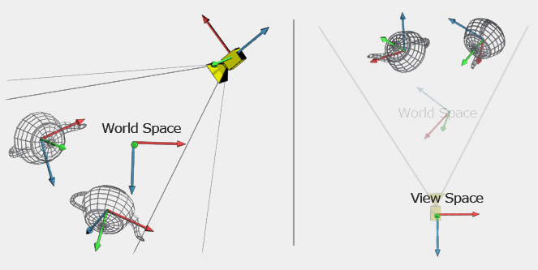

-
Matrix Transformations
- Affine Space
- Affine transformation
- 4D Homogeneous Space
- Scaling Matrices
- Rotation Matrices
- Refletion Matrix
- Shearing Matrix
- Translation Matrix
- Compositions of Transformations
- Model Matrix
- View Matrix
- Projection Matrix
- MVP Matrix
- 3D Normalized Device Coordinates
- Viewport Transformation Matrix
- Reference
Matrix Transformations
The matrices are used frequently in computer graphics and the matrix transformations are one of the core mechanics of any 3D graphics, the chain of matrix transformations allows rendering a 3D object on a 2D monitor.
Affine Space
An affine space is a generalization of vector space where there is not a notion of an origin. Affine space works with points and vectors where translations are allowed.
Affine transformation
An affine transformation is a function that maps points from one affine space to another, preserving affine properties like parallelism, ratio of lengths for parallel line segments. Affine transformations include: scaling, rotation, translation, reflection, shearing. In geometry, an affine transformation can be represented as the composition of a linear transformation plus a translation. If we want to perform any affine transformation using matrix form, the representation of 3D Euclidean vector space is not enough. We can use 4D homogeneous space to represent the 3D Euclidean affine space. We extend our vectors to four-dimension and using 4x4 matrix to represent affine transformation.
4D Homogeneous Space
The fourth component in a 4D vector is $w$, sometimes referred to as the homogeneous coordinate. Image the standard 2D plane such that any 2D point $(x, y)$ is represented in homogeneous 3D space $(x, y, 1)$. There are an infinite points in homogeneous space $(kx, ky, k)$, $k \ne 0$, these points form a line through the origin. For all points that are not in the plane $w=1$, we can project the point onto the standard plane by dividing by $w$. So the homogeneous coordinate $(x, y, w)$ is mapped to the 2D point $(x/w, y/w)$.
When $w = 0$, we can interpret as a direction. The location where $w \ne 0$ are points and the directions with $w = 0$ are vectors. If assume for the moment that $w$ is always 1, any 3 x 3 transformation matrix can be represented in 4D homogeneous space by using the conversion.
$$
\begin{bmatrix}
m_{11} & m_{12} & m_{13}
& 0\\\\
m_{21} & m_{22} & m_{23} & 0\\\\
m_{31}
& m_{32} & m_{33} & 0\\\\
0 & 0 & 0 &
1\\\\
\end{bmatrix}
$$
Scaling Matrices
Given $\vec{k}=(k_i, k_j, k_z)$ is a 3D vector that represent the scale along each axis. The 3D homogeneous scale matrix is
$$
S(\vec{k}) =
\begin{bmatrix}
k_x & 0
& 0 & 0\\\\
0 & k_y & 0 & 0\\\\
0
& 0 & k_z & 0\\\\
0 & 0 & 0 &
1\\\\
\end{bmatrix}
$$
The scaled vector will be
$$
p^\prime = S(\vec{k})p
$$
Rotation Matrices
In 3D, rotation occurs about a axis and $\theta$ is the angle using the right-hand rule(counterclockwise direction). The rotations can also be represented by clockwise direction.
$$
p^\prime = \textbf{R}(\hat{\textbf{n}},\theta)p
$$
$$
\textbf{R}_x(\theta) =
\begin{bmatrix}
1
& 0 & 0\\\\
0 & \cos\theta &
-\sin\theta\\\\
0 & \sin\theta & \cos\theta\\\\
\end{bmatrix}
$$
$$
\textbf{R}_y(\theta) =
\begin{bmatrix}
\cos\theta
& 0 & \sin\theta\\\\
0 & 1 & 0\\\\
-\sin\theta
& 0 & \cos\theta\\\\
\end{bmatrix}
$$
$$
\textbf{R}_z(\theta) =
\begin{bmatrix}
\cos\theta
& -\sin\theta & 0\\\\
\sin\theta & \cos\theta
& 0\\\\
0 & 0 & 1\\\\
\end{bmatrix}
$$
For an arbitrary axis in 3D, the rotation matrix $\textbf{R}(\hat{\textbf{n}}, \theta)$ is
$$
\begin{bmatrix}
n_x^2 (1 - \cos \theta) + \cos \theta
& n_x n_y (1 - \cos \theta) - n_z \sin \theta & n_x n_z (1
- \cos \theta) + n_y \sin \theta\\\\
n_x n_y (1 - \cos
\theta) + n_z \sin \theta & n_y^2 (1 - \cos \theta) + \cos
\theta & n_y n_z (1 - \cos \theta) - n_x \sin \theta\\\\
n_x
n_z (1 - \cos \theta) - n_y \sin \theta & n_y n_z (1 - \cos
\theta) + n_x \sin \theta & n_z^2 (1 - \cos \theta) + \cos
\theta\\\\
\end{bmatrix}
$$
Refletion Matrix
Reflection (also called mirroring) is a transformation that “flips” the object about a line (in 2D) or a plane (in 3D).
Reflection can be accomplished by applying a scale factor of $-1$. For the transformation to be linear, the plane must contain the origin.
$$
p^\prime = \textbf{R}(\hat{\textbf{n}})p
$$
$$
\textbf{R}(\hat{\textbf{n}}) =
\begin{bmatrix}
1
- 2 n^2_x & -2 n_x n_y & -2 n_x n_z\\\\
-2 n_x n_y
& 1 - 2 n^2_y & -2 n_y n_z\\\\
-2 n_x n_z & -2
n_y n_z & 1 - 2 n^2_z\\\\
\end{bmatrix}
$$
Shearing Matrix
Shearing is a transformation that “skews” the coordinate space, stretching it non-uniformly. Angles are not preserved; however, surprisingly, areas and volumes are.
$$
\textbf{H} =
\begin{bmatrix}
1 & s^y_x
& s^z_x\\\\
s^x_y & 1 & s^z_y\\\\
s^x_z
& s^y_z & 1\\\\
\end{bmatrix}
$$
$$
x^\prime = x + s^y_x y + s^z_x z\\\\
y^\prime
= s^x_y x + y + s^z_y z\\\\
z^\prime = s^x_z x +
s^y_z y + z\\\\
$$
Translation Matrix
With 4x4 Matrix, we can also express translation as a matrix multiplication that represent the position where we want to move our space to, which we can use to head move the camara or to move objects.
$$
p^\prime = T(\vec{d})p
$$
$$
T(\vec{d}) =
\begin{bmatrix}
1 & 0
& 0 & d_x\\\\
0 & 1 & 0 & d_y\\\\
0
& 0 & 1 & d_z\\\\
0 & 0 & 0 &
1\\\\
\end{bmatrix}
$$
Compositions of Transformations
We can chain several transformations together by multiplying matrices in order, the result will be a single matrix that encodes the full transformation.
Let $T$ be translation matrix and $\vec{d}$ be a translation vector, $L$ as linear transformation about the axes, the corresponding matrix is
$$
A = T
\begin{bmatrix}
L & 0\\\\
0
& 1\\\\
\end{bmatrix} =
\begin{bmatrix}
L
& 0\\\\
0 & 1\\\\
\end{bmatrix}
T =
\begin{bmatrix}
L
& \vec{d}\\\\
0 & 1\\\\
\end{bmatrix}
$$
Then we could compute a new point $p^\prime$ by $p^\prime = A p$. $L$ can be any combination of scaling, rotation, reflection, shearing matrix but the order of application matter.
Model Matrix
Every model in the game lives in its specific vector space, called model space. All the vertices are relative to the origin of the model space, if we want them to be in any spatial relation we need model matrix to transform them into a common space which is called world space. Since every object will be in its own position and orientation in the world, we will need a different model matrix for each object to scale it, rotate it and move it to the desired position and orientation with appropriate size. When all the objects have been transformed into a common space, their vertices will then be relative to the world space.
View Matrix
We use view matrix to transform into an auxiliary space view space is that simplifies a lot the math if we could have the camera centered in the origin and watching down one of the three axis. In OpenGL, by default, the camera is at the coordinate origin, facing towards -z and with the vector up oriented with the y-axis.

Projection Matrix
The view frustum is the volume of space that is potentially visible to the camera. The view frustum is bounded by six planes, known as the clip planes, top, left, bottom, right, near and far planes. The near and far clip planes, which correspond to certain camera-space values of z. The reason for the far clip plane is prevents rendering of objects beyond a certain distance. A far clip plane can limit the number of objects that need to be rendered in an outdoor environment. The far clip establishes what (floating point) z value in camera space will correspond to the maximum value that can be stored in the depth buffer.


To facilitate the transformation of points in view frustum to pixels, we use projection matrix to map the view frustum into the homogeneous clip space.
Orthographic Projection
In the orthographic projection, also known as a parallel projection, the lines from the original point to the resulting projected point on the plane are parallel to the camera’s viewing direciton.
The orthographic frustum is
$$
\begin{split}
M_{\text{orthographic projection}}
&= ST\\\\
&=
\begin{bmatrix}
\frac{2}{right
- left} & 0 & 0 & 0\\\\
0 & \frac{2}{top -
bottom} & 0 & 0\\\\
0 & 0 & \frac{2}{far -
near} & 0\\\\
0 & 0 & 0 & 1\\\\
\end{bmatrix}
\begin{bmatrix}
1
& 0 & 0 & -\frac{left + right}{2}\\\\
0 & 1
& 0 & -\frac{top + bottom}{2}\\\\
0 & 0 & -1
& -\frac{far + near}{2}\\\\
0 & 0 & 0 &
1\\\\
\end{bmatrix}
\\\\
&=
\begin{bmatrix}
\frac{2}{right
- left} & 0 & 0 & -\frac{right + left}{right -
left}\\\\
0 & \frac{2}{top - bottom} & 0 &
-\frac{top + bottom}{top - bottom}\\\\
0 & 0 &
-\frac{2}{far - near} & -\frac{far + near}{far - near}\\\\
0
& 0 & 0 & 1\\\\
\end{bmatrix}
\\\\
\end{split}
$$
The projection on a 2x2 plane parallel to the XY plane that passes through the point z = -D is
$$
\begin{bmatrix}
1 & 0 & 0 & 0\\\\
0
& 1 & 0 & 0\\\\
0 & 0 & 0 & -D\\\\
0
& 0 & 0 & 1\\\\
\end{bmatrix}
$$
Perspective Projection
With perspective projection, the projectors intersect at the center of projeciton.
Due to perpective foreshortening, the projecion on the left is larger than the projection on the right. The left-hand is closer to the projection plane. As we move an object farther away from the center of projection, its orthographic projection remains constant, but the perspective projection gets smaller. The projectors cross the center of projection and the image is inverted when striking the plane.
By similar triangles, we know
$$
\begin{split}
p\prime_x &=
\frac{-dp_x}{z}\\\\
p\prime_y &=
\frac{-dp_y}{z}\\\\
\end{split}
$$
The $z$ value of all the projected points are the same $-d$. Thus the result of projecting a point $\textbf{p}$ through the origin onto a plane at $z=-d$ is
$$
p = (x, y, z) \Rightarrow p^\prime =
(-dx/z, -dy/z, -d)
$$
if we move the plane of projeciton to $z=d$, we will have
$$
p^\prime = [dx/z \quad, dy/z \quad d]
$$
The projection on a plane parallel to the XY plane that passes through the point z = -D with the camera (center of projection) at the origin facing towards -z and with the vector up oriented with the y-axis is
$$
\begin{bmatrix}
1 & 0 & 0 & 0\\\\
0
& 1 & 0 & 0\\\\
0 & 0 & 1 & 0\\\\
0
& 0 & -\frac{1}{d} & 0\\\\
\end{bmatrix}
\begin{bmatrix}
x\\\\
y\\\\
z\\\\
1\\\\
\end{bmatrix}
=
\begin{bmatrix}
x\\\\
y\\\\
z\\\\
-\frac{z}{d}\\\\
\end{bmatrix}
$$
And after the division we will have
$$
\begin{bmatrix}
-\frac{dx}{z}\\\\
-\frac{dy}{z}\\\\
-d\\\\
\end{bmatrix}
$$
The perspective frustum is
$$
p^{\prime}
=
\begin{bmatrix}
p_x^{\prime}\\\\
p_y^{\prime}\\\\
p_z^{\prime}\\\\
w\\\\
\end{bmatrix}
=
M_{\text{perspective projection}}p =
\begin{bmatrix}
\frac{2n}{r-l}
& 0 & \frac{r+l}{r-l} & 0\\\\
0 &
\frac{2n}{t-b} & \frac{t+b}{t-b} & 0\\\\
0 & 0
& -\frac{f+n}{f-n} & -\frac{2nf}{f-n}\\\\
0 & 0
& -1 & 0\\\\
\end{bmatrix}
\begin{bmatrix}
p_x\\\\
p_y\\\\
p_z\\\\
1\\\\
\end{bmatrix}
$$
Given the field of view $\alpha$ in y direction and the aspect ratio $\beta$ of a display screen is equal to the ratio of $x$ (width) to $y$ (height)
$$
e = \frac{1}{\tan{\frac{\alpha}{2}}}
$$
The view frustum plane normal directions in OpenGL camera space is
Because of the symmetry along x, y axis, the following relationships hold
$$
t = \tan{\frac{\alpha}{2}} n =
\frac{n}{e}\\\\
b = -t\\\\
r = t \cdot \beta
= \frac{n\beta}{e}\\\\
l = -r\\\\
\frac{r+l}{r-l}
= \frac{t+b}{t-b} = 0\\\\
\frac{2n}{r-l} =
\frac{e}{\beta}\\\\
\frac{2n}{t-b} = e\\\\
$$
$$
\begin{bmatrix}
\frac{e}{\beta} & 0 & 0 &
0\\\\
0 & e & 0 & 0\\\\
0 & 0 &
-\frac{f+n}{f-n} & -\frac{2nf}{f-n}\\\\
0 & 0 &
-1 & 0\\\\
\end{bmatrix}
$$
Frustum Culling
After applying the projection matrix, each vertex is transformed into homogeneous clip space, where its position is given in homogeneous coordinates. $(ùë•,ùë¶,ùëß,ùë§)$. In this space, the viewing frustum is defined as a normalized cube called the canonical view volume (CVV). Any vertex whose homogeneous clip space coordinates fall outside these bounds is considered outside the frustum and should be clipped (discarded).
$$
-ùë§ \le x \le ùë§\\\\
−w \le y \le w\\\\
−w \le z
\le w\\\\
$$
OpenGL pipeline automatically performs clipping after vertex processing. If a vertex is within the range, it is passed to next stage. Otherwise, OpenGL may discard it, depending on the rest of the geometry.
MVP Matrix
We can chain all three matrices together to a single matrix $M_{\text{model, view, projection}} = M_{projection} M_{\text{view}} M_{\text{model}}$. We can now perform a 4x4 affine transformation with MVP matrix to map an object from model space into homogeneous clip space $p^{\prime} = M_{\text{model, view, projection}} p$.
3D Normalized Device Coordinates
Given a homogeneous clip space, now we subsequently divide $x$, $y$, $z$ by the $w$ coordinate of the homogeneous clip space, this operation produces 3D normalized device coordinates (NDC), also commonly known as “screen space“.
That is a normalized 6-tuple cube which defines the clipping planes. The dimensions are between -1 and 1 for every axis, anything outside the [1, -1] range is outside the camera view area. The cube is translated so that it is centered at the origin which is defined by having a minimum corner (-1,-1,-1) at left-bottom-near and a maximum corner (1,1,1) at right-top-far.
Viewport Transformation Matrix
The NDC now represent the 2D positions of points on screen, with X and Y in [−1, 1], together with the depth within the depth buffer range, Z in [−1, 1]. The axis orientation is X = right, Y = up, and Z can be either forward or backward depending on the depth buffer configuration.
To render on the portion of the output device expressed in pixels (viewport), we apply the viewport transform to the normalized device coordinates.
$$
V = TS =
\begin{bmatrix}
1 & 0
& 0 & \frac{r+l}{2}\\\\
0 & 1 & 0 &
\frac{t+b}{2}\\\\
0 & 0 & 1 & \frac{1}{2}\\\\
0
& 0 & 0 & 1\\\\
\end{bmatrix}
\begin{bmatrix}
\frac{r-l}{2}
& 0 & 0 & 0\\\\
0 & \frac{t-b}{2} & 0
& 0\\\\
0 & 0 & \frac{1}{2} & 0\\\\
0
& 0 & 0 & 1\\\\
\end{bmatrix}
=
\begin{bmatrix}
\frac{r-l}{2}
& 0 & 0 & \frac{r+l}{2}\\\\
0 & \frac{t-b}{2}
& 0 & \frac{t+b}{2}\\\\
0 & 0 & \frac{1}{2}
& \frac{1}{2}\\\\
0 & 0 & 0 & 1\\\\
\end{bmatrix}
$$
Reference
- 3D Math Primer For Graphics and Game Development pag. 138-144, 176-189
- Matrices - Sparky Engine
- Fundamentals of Computer Graphics pag. 140-144
- Mathematics for 3D Game Programming and Computer Graphics, Third Edition pag. 75, 76, 101-115
- Wikipedia - Orthographic projection
- World, View and Projection Transformation Matrices
- 3D Transformation
- The Perspective and Orthographic Projection Matrix
- The Viewport Transformation
- Lean OpenGL - Coordinate Systems